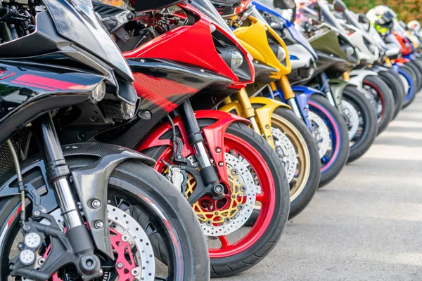

-

Мотоцикли: вибір для кожного
Мотоцикли стають все популярнішими, як серед новачків, так і серед досвідчених райдерів. Вибір між спортивними, туристичними або кросовими моделями залежить від ваших уподобань і потреб. Завдяки новітнім технологіям мотоцикли стають комфортнішими та безпечнішими, що робить їх ідеальним транспортом для щоденних поїздок і подорожей.
-
Автомобільні аксесуари для комфортних поїздок
Окрім самого автомобіля, важливими є аксесуари, які забезпечують комфорт, безпеку та функціональність під час поїздок. Від чохлів для сидінь до систем навігації та камер заднього виду — автоаксесуари значно покращують досвід водія та пасажирів. Обирайте найкращі товари для вашого автомобіля та насолоджуйтеся подорожами.
-
Мото-аксесуари для безпеки та стилю
Безпека — це найголовніше при їзді на мотоциклі, тому обов'язково необхідно використовувати відповідні аксесуари: шоломи, рукавички, захист колін та ліктів, а також стильний одяг для райдера. Вибір правильної екіпіровки забезпечить вам не тільки захист, але й зручність та стиль на дорозі.